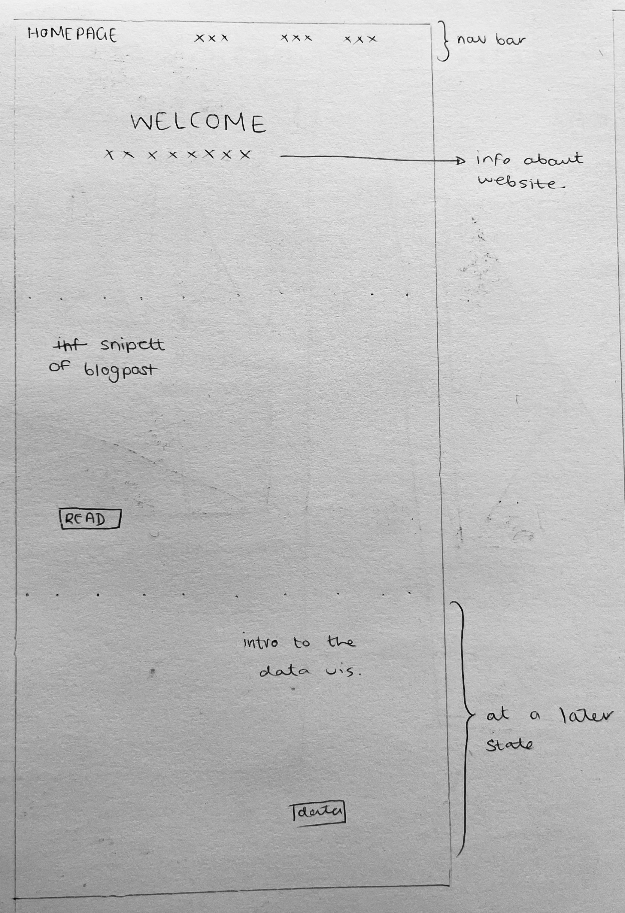

Close Reading: Overview of Data Visualisation by Li Q
Summary and reflection
Data visualisation concerns the representation of data in a visual form in order to make the data easier to understand, comprehend, explore and analyse. Representing data in this way can make it easier for people to see patterns and trends in the data allowing it then to be more easily understood. It allows for the knowledge present in the data to be communicated more effectively. The text outlines the advantages of data visualisation as it is able to represent large datasets quickly, it allows the easy identification of patterns, it allows for quality control and it can work to deepen the comprehension of the data being presented (Li Q 2020). Presenting data in this way can influence or help with decision making and overall just in how we view a certain dataset, it can be used to convey certain ideas. Data visualisation is used to visualise both information and scientific research. Data visualisation is the process by “which data in any form can be transformed into graphical images.”(Li Q, 2020 p19)
Another area the reading focuses is on the idea of data versus the idea of information. Data exists as a raw form of information that is unorganised while information or secondary data is data that has been organised or processed that then illustrates some sort of meaning, it is data that we can then extract knowledge from.
The reading gives examples of the various forms that data can be represented in. A tree illustrates data or information in a hierarchical manner showing how each item relates to another. The example given to show the tree type illustrated form me and issues that could come about while representing data, that being that there is that there could be some bias in what information gets represented, as the example tree only focuses on European architecture styles and leaves out others or just briefly touches on them. The reading then talks about maps, charts, scatter plots, tables, diagrams and graphs which overlap, waveforms, simulations and volume. The last two are primarily used to represent scientific data.
The reading emphasises that it is important to consider what type of information you are representing or what information you wish to communicate when choosing the way you want to represent it or what form best aliens with your end goal. This aspect raised a few questions such as; is it possible to represent any dataset in all of the above forms? Are the various forms interchangeable? And what is the best way to go about choosing the right form? The reading kind of answers the last question by stating how the end result should fulfil certain criteria; it should present the information in a form that is readable, it should be easily recognizable or easily comprehensible and it should have, illustrate meaning or knowledge.(Li Q, 2020)
The reading then goes on to explore how human perception needs to be considered and how perception affects how humans understand and interpret information. Perception allows humans to convert sensory data into understanding, it allows us to relate to the world around us. In a Ted talk about data visualisation David McCandless talks about why representing data visually may be an effective way of communicating the meaning within data and the reading as mentions something similar when it discusses preattentive processing and how our eyes can transmit large amounts of information effectively. This brought up a question of whether or not this way of data representation would be accessible to everyone as it releases heavily on a sense that not everyone may have or people whose sense of sight may be impaired. The reading briefly touches on the importance of design or aesthetics when it comes to data visualisation because it can allow for the data to be more readable and the pattern to be more identifiable or recognizable therefore more effectively communicating meaning and knowledge.
References
Li, Q. (1970) Overview of data visualization, SpringerLink. Available at:
https://link.springer.com/chapter/10.1007/978-981-15-5069-0_2
McCandless, D. (2010) The beauty of Data Visualization, David McCandless: The beauty of data visualization | TED Talk. Available at:
https://www.ted.com/talks/david_mccandless_the_beauty_of_data_visualization?language=en
Critical reflection on UI and UX
The main aim I wish to achieve with my website is to make it easy to understand, with a minimal design drawing inspiration from modern web design and easy to navigate using common conventions seen in websites.
Homepage

At the top of the page there will be a navigation bar that links to the other pages. The nav bar will be dynamic so when the user scrolls down the nav bar will always be at the top of the page. The page will open with a welcome which briefly introduces the purpose of the website and also establishes the overall aesthetic of the website.
Scrolling further down the page the user will be shown a preview of the blog section's latest article with a button displaying read more which will take the user to the blog section. Further down there will be a preview of the data visualisation page with a brief description of the latest data visualisation. The reasoning behind these choices is because of the common conventions I’ve observed while looking at other website layouts. I think this format gives the user direction when entering the website and has the potential to minimise the amount of clicks. At a later state I think I will make a preview of each section on the homepage with a brief explanation.
Blog Section

Instead of a navigation bar there will be a hamburger button that will then display the nav when it is clicked, it will remain fixed to the top left of the page. The blog posts will be displayed based on the date they were released going from the most recent post to the post that was posted first. This is a common format for blogs. Instead of displaying the full blog posts it will display the introduction with a button asking if the user wants to read the full post.
Style Guide

The website will use minimal colour. Mostly being in black and white. As it will be a space themed website all the backgrounds will be black with white used for text. When there is a need for contrast the inverse will be used.
Conclusion
By using commonly used web design conventions I hope to make a website that’s really easy to navigate and understand.
Close reading: What is Interaction for Data Visualization?
The article is concerned with defining interaction in visualisaion. The article puts an emphasis on the idea of interactivity in terms of human computer interaction trying to formulate a definition of what it would mean for a visualisation to be interactive.
The article first explains its methods of obtaining data for there research going into the criteria that papers needed to meet in order to be considered as well as the information that was being looked for. The research for the article was done using a quantitive approach in order to come to the desired outcome which in this case was to define interaction in terms of visualisation in a way that is flexible and comprehensive. The article goes onto establishing key components of interaction mainly being external entities which entail the user interacting with the dat using a set of controls, internal entities with entails interaction being an action that involves a goal or intent on the part of the user, external actions which is described as “action-reaction pairs” (Dimara and Perin, 2020) which is about how the system should respond once the user acts upon it, the last component is internal actions which is about how the user then processes the data in their own mind. These key components however can be expanded upon.
The article explores the ways in which interaction or the key aspects of interaction in terms of visualisations could be somewhat unconventional and how the key components outlined allow for this sort of flexibility. For example in the concept of external entities the idea of some sort of tool or medium by which the user interacts with the data is outlined but very loosely, this allows for there to be various unconventional modes for the user to interact with the data rather than the visualisations being constrained to the typical screen, mouse and keyboard. An interesting example of this I can think of is the interactive sandbox height maps, by moving the sand around the user is presented with a height map, this is an interesting way of getting intup from the user in which te sand acts as the mediating entity offering the user an interactive data experience.
The article goes on to discuss the idea of goals and intent when it comes to interacting with a visualisation, diving into what a goal or intention can manifest as. Goals can be present at various levels and can be divided or catagories into sub levels. Goals can evolve and change over time based on previous outcomes or the amount of time the user spends interacting with the visualisation.
Further the article talks about the benefits interaction can have, this is an area that is spoken a lot about when mentioning the idea of interaction in visualisation, the main point is that interaction can allow for the user to gain a better understanding of the data as well as gain deeper and more specific insight into the data set. This outlines how interaction can be useful in the process of knowledge creation and understanding. The article highlights the issues that arise when trying to design interaction in visulisation in that there maybe a lack of flexibility when considering the questions or goals of the human user as well as the limitations and constraints of visualisation systems briefly mentioning how when designing interactions concepts like playfulness aren’t often considered or are hard to implement. Again I think the sandbox map is a good example of playfulness as it pertains to visualisation. The article also discusses how system centric visualisations can often limit or exclude the users ability to have evolving intentions and goals therefore not allowing the user to explore the data to its fullest limiting the amount of value the user can get out of the visualisation. If a visualisation is more playful and allows the user to explore it more flexibly this has the potential more the user to extract more understanding from it. Visualisation systems should be designed to allow the user to freely explore the data however this idea could conflict or clash with the intetion of the designer of the system. If a data visualisation is designed to get a certain message across or tell a specific story to the user this can mean that the way in which the data is allowed to be explored is limited.
The reading then explores interaction in terms of human computer interaction outlining key points that characterise good interaction when it comes to HCI. Some of the points are similar the the points discussed above when taking about interaction just in terms of visualisation such as dialogue is somewhat similar to external actions, control and tool use are similar to external entities. The concept of transmission alines or is somewhat similar to the idea of internal actions in that they both have to do with the taking of information it seems that experience would also fit into the concept of internal actions. The reading however ponts out and suggests that when considering interaction for visualisations HCI’s points should be made to be more flexible inorder to account for the users possible intentions notably allowing the user to generate understanding over time while interacting with the visualisation.
The article stresses that interaction for visualisation should account for the users evolving goals and intentions in order to facilitate the creation of knowledge, the communicatio between the data through some sort of medium to the user should be done in a way that is easily accessible, the article also mentions how there are opportunities to create interactive visualisations that are fun and playful that utillise different technologies and occupy different spaces perhaps like creating visualisations that can be interacted with in a VR space would be an interesting example of this.
Interaction in terms of visalistions could be a very helpful way of generating understanding, an example that I found where this maybe extremly helpful is the use of ineractive visualisations within acedemic journals, incorporating interaction here could allow information to be more easily accessible.
Notes on the actual reading itself:
One observation of the reading I had that I thought would be interesting to point out or rather it just really stuck out to me is that in the example scenarios given to illiterate interactivity all the persons where given male names and pronouns. I just thought it was important to notes as in the (section) a point is made that the user or persons interacting with the data should remain gender neutral. This bias towards male language just highlighted an issue discussed in DAT last semester.
References
Dimara, E and Perin, C. What is Interaction for Data Visualization?. IEEE Transactions on Visualization and Computer Graphics, Institute of Electrical and Electronics Engineers, 2020, 26 (1), pp.119 - 129.
Kusmer, A. (2018) This interactive sandbox allows users to make topographical maps in real-time, Atlas Obscura. Available at:
https://www.atlasobscura.com/articles/make-topographical-maps-in-a-sandbox
Perkel, J.M. (2018) Data visualization tools drive interactivity and reproducibility in online publishing, Nature News. Available at:
https://www.nature.com/articles/d41586-018-01322-9#ref-CR2
ThoughtSpot, T. (2023) What is interactive data visualization? 5 great examples, ThoughtSpot. Available at:
https://www.thoughtspot.com/data-trends/data-visualization/interactive-data-visualization
What is interactive data visualization? (no date) What is Interactive Data Visualization? | HEAVY.AI. Available at:
https://www.heavy.ai/technical-glossary/interactive-data-visualization